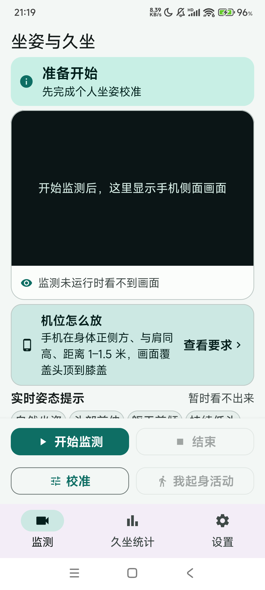
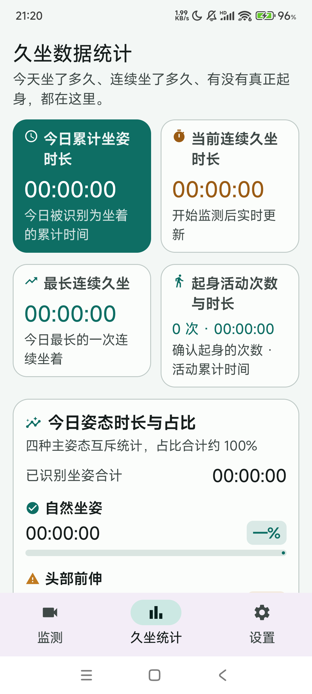
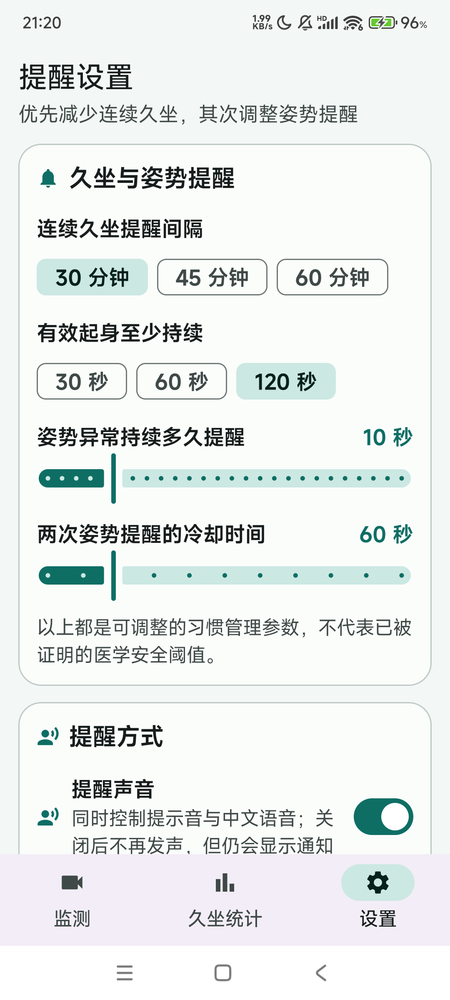

用前置摄像头在手机本地监测「头前伸 / 躯干前倾 / 持续低头」三类不良坐姿，并帮你真正减少久坐。不是医疗器械，不产出健康评分。
从校准到提醒到统计，一条完整的坐姿与久坐管理闭环，全部在手机本地完成。
实时识别头前伸、躯干前倾、持续低头；关键点缺失时如实标「无法判断」，不拿 0 冒充正常。
严格区分「坐着 / 起身 / 看不到人」。起身要确认才计数，今日累计坐姿不清零，避免虚高。
6–10 秒采集你自然坐姿的基线，异常判定是相对你本人的偏移，而不是套一个统一阈值。
久坐间隔与姿态异常分别提醒，中文语音播报原因与建议动作；通知默认不震动。
今日累计坐姿、当前/最长连续久坐、起身次数与活动时长、四类姿态占比，近 7 天趋势一眼看。
浅色 / 深色 / 跟随系统，简体中文 / English；切换不丢监测状态。
真机截图。



App 使用了 MediaPipe、AndroidX、Kotlin 等开源组件完成相机取景、姿态识别与本地存储；所有画面分析都在手机本地完成，不联网、不上传。
Apache-2.0 · 在本机运行姿态与人脸关键点模型，不联网。
Apache-2.0 · CameraX、Compose、Room、Lifecycle、Navigation、DataStore。
GPL-2.0 + Classpath Exception · 让低版本 Android 也能使用 java.time 等标准 API。